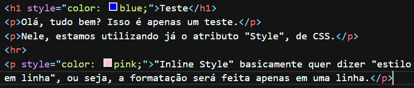

Olá, tudo bem? Isso é apenas um teste.
Nele, estamos utilizando já o atributo "Style", de CSS.
"Inline Style" basicamente quer dizer "estilo em linha", ou seja, a formatação será feita apenas em uma linha.
Na imagem abaixo, você pode ver o código usado para reproduzir o texto e formatação acima.
